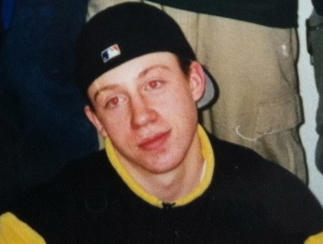

Macklemore's Childhood and Pre-fame Life
- He attended Garfield highschool where he got into the use of liquor and drugs heavily.
- Released first extended play song in 2000.
- Spiralled downward in the spotlight to the allure of drugs and sex.
- Entered 35-day rehab program to try again at the fame.
- Teamed with Ryan Lewis in 2010 to release his top hits.
|
 |